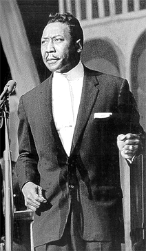
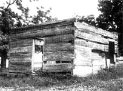
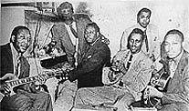
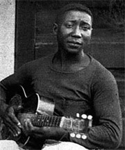

Мы начинаем публиковать фрагменты из книги Сандры Б.Туз "MUDDY WATERS. The Mojo Man" в изложении Тамары Кожекиной. На сегодня эта книга является наиболее полной компиляцией архивных материалов и интервью, посвященных Мадди Уотерсу, его соратникам и другим участникам Великой чикагской блюзовой революции.
Считается, что чикагский блюз произошел от (пластинки) "Нет мне покоя" и "Тянет меня домой". Это не так. Без гармоники, пианино, ритм-гитары или барабанов только электроусилитель связывает эти деревенские напевы с будущим блюза. Именно звучание, которое Мадди творил в клубах, повлекло за собой революцию.
В этих тавернах негритянского гетто Мадди возглавил переворот. Он влил в блюз Дельты ту дозу грубой силы, которая увела его с вялого юга к разгульному жизнелюбию послевоенного Чикаго. Это был не просто деревенский блюз, приодетый для большого города. У Мадди не было намерений просто перенести свой дельта-блюз в городские аппартаменты..."
Сандра Б.Туз
 |
|||
|
Muddy, Jerome Green, Otis Spann, Henry Strong, Elgin Evans, Jimmy Rogers |

Картины Миссиссиппи в фотографиях С.Н.Чаттерлея:
дорога
лес
мост
Фотографии опубликованы в автобиографии "Ханейбоя" Эдвардса.
{kind=link}
{kind=link}
{kind=link}
{kind=link}
{kind=link}
{kind=link}
{kind=link}